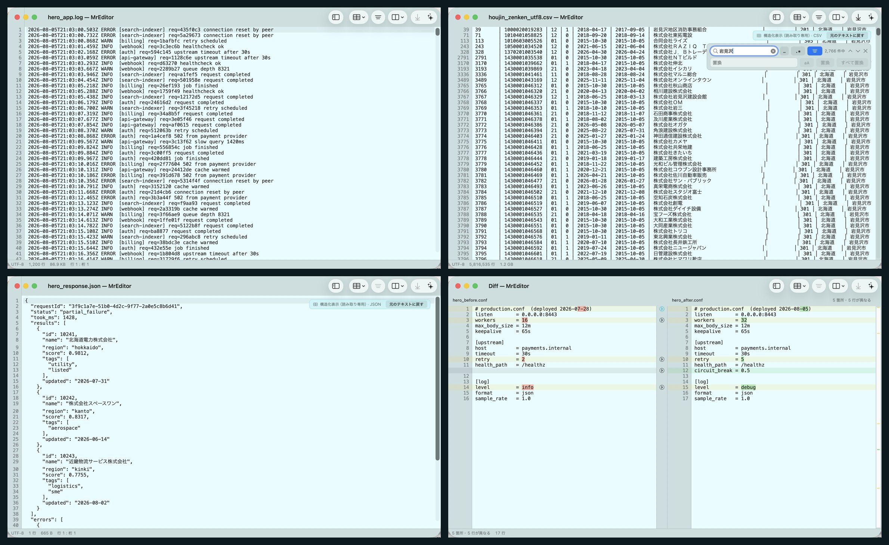
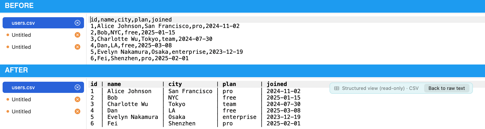
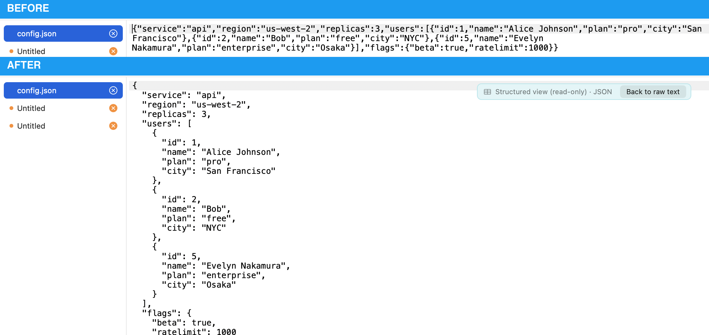

Logs. CSVs. Exports, dumps, diffs. Text that arrived from somewhere else — so you don't get to choose its size, its encoding, or how badly it is formatted. MrEditor opens it, filters it, lines up its columns, compares it, fixes it, and saves it without ever leaving the file half-written.
Signed with an Apple Developer ID and notarized by Apple — just double-click it. Universal (Apple Silicon & Intel).

Left to right, top to bottom: a service log, a 5,816,535-row CSV filtered while its columns stay lined up, a minified JSON response pretty-printed, and two config files compared down to the character that changed. None of it was written by the person looking at it.
One file, one measurement: Japan's full corporate registry as CSV — 1.18 GiB, 5,816,535 rows, 30 columns. Measured 2026-08-03 on the shipping 1.10.2 build. Excel opens the same file and stops at 1,048,576 rows — its hard limit — taking about 60 seconds and 2.24 GB to lose 4,767,959 rows, with no warning. Numbers never opened it at all. This is not a huge-file trick: the ceiling is much higher (a 10 GB, 86,420,337-line log opens in about 80 ms and vmmap reports 0 bytes dirty for it, because the file is mapped and never copied). It is just that nothing changes as the file grows.
Switch on Structured View and CSV/TSV columns align, minified JSON pretty-prints — millions of rows, instantly. And you can still grep it: filter down to the matching rows with the columns still lined up, at any size. The formatting is view-only, so the file on disk never changes: save and you get your original back, byte for byte. Then ⌥⌘J runs a jmespath-style query in place; the result is never written. Fixed-width records line up too: drop the field boundaries on the column ruler (⌥⌘K) — or type them, 1-8,9-14,15-40 — and read them as columns.


One take, real speed: a 10 GB log opens, and we scroll and search it while the line index is still being built in the background. When the index lands, the status bar stops guessing — 86,420,337 lines, exactly — and ⌘L jumps to the last one.
The index — counting all 86 million lines — takes about 10 seconds on this file. Watch the status bar: it shows an estimate (about 89,292,800) and settles on the exact count when the scan finishes. The view never blocks while that runs. Reading, scrolling and searching stay live throughout; the search in this clip finds 137,111 matches while the index is at 95%.
Out of 10 GB. The rest is streamed in the background to build a line index, and none of it is kept in memory. Loading the whole document first — the usual approach — falls over at this size. So MrEditor does not do that.
The file is memory-mapped. The OS pages in only what you actually touch — so opening is near-instant at any size.
Keep one byte offset every 2,000 lines. Any line is a quick scan away. The whole index is tiny.
A fixed-size view with a line-unit scroller — no 1.6-billion-point document view to blow past float precision.
tail -f a 10 GB log — and edit it.Follow mode (⌥⌘F) tracks a growing file the way tail -f does — but it never reloads. The mmap index extends by the new bytes only, so it scales to a log that's still being written at 10 GB. Editors that tail (BBEdit, Sakura) reload the whole file; log viewers that scale to 10 GB (klogg, lnav) are read-only. Following a multi-GB log incrementally, while staying editable — we couldn't find that combination anywhere else.
ssh host:/var/log/app.log (⌃⌘O) opens at the tail with real line numbers, fetching only the part you look at. Filtering runs on the far side: grep -n hands back the matching lines and their numbers without transferring a byte of the file — faster than scanning locally, because nothing is sent. Follow streams tail -f and stops it over there when you stop, so nothing is left running on your server. ⌘C gives you the text, so what you found goes straight into Compare with Clipboard. Authentication is left to /usr/bin/ssh — if your terminal can reach it, so can this.
ssh host:/path, opened at the tail without downloading. Filtering runs on the far sidetail -f (⌥⌘F); tracks a growing file incrementally, no reload, even at 10 GBEverything above stays free, and stays MIT. What is being prepared as MrkEditor (Pro) is the other half: counting, summarising, seeing time, and searching across folders — the things you currently leave the editor to do. Numbers below are measured on the shipping code (M4 Max, August 2026), not estimates.
sort | uniq -c | sort -rn does, on a column or a key=value field. 3.40 s over a 10 GB, 86,420,337-line log. Double-click a row and the document filters down to that valueNot on sale yet — there is no price and no checkout on this page on purpose. When it opens, the free app will tell you from the Analyze menu.